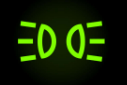
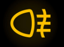

Auto Theorie – Verlichting
Verlichting
Alle voertuigen moeten ’s nachts en overdag bij beperkt zicht, zowel binnen als buiten de bebouwde kom, lampen gebruiken. Je zet verlichting aan om zelf beter te kunnen kijken en om jezelf beter zichtbaar te maken voor andere weggebruikers. De lampen van je auto hebben verschillende functies, daarom is het van belang dat je precies weet hoe je ze moet hanteren. Het kan gevaarlijk zijn als je de verlichting verkeerd toepast of helemaal niet gebruikt.
Dimlichten
Dit is de verlichting die je het vaakst gebruikt. Een dimlicht is een naar beneden gerichte lichtbundel. Bij beperkt zicht moet je altijd je dimlichten inschakelen.

Voorbeelden wanneer je dimlicht gebruikt zijn:
- wanneer het donker of nacht is
- bij slecht zicht (bijvoorbeeld door schemer, mist, sneeuw, hagel of regen)
- in een tunnel
- bij een laagstaande zon
In het donker en bij verminderd zicht is het gebruik van dimlichten verplicht. Dimlichten hoeven echter niet te branden als de mistlampen al aanstaan.
Stadslicht (parkeerlicht)
Stadslicht zou eigenlijk beter parkeerlicht genoemd kunnen worden. Je gebruikt het namelijk uitsluitend bij parkeren of wanneer je stilstaat.

In het donker en bij beperkt zicht moet je stadslicht en achterlicht voeren als je stilstaat of geparkeerd bent op:
- de rijbaan buiten de bebouwde kom
- een parkeerhaven, parkeerstrook, vluchtstrook of vluchthaven langs een autoweg of snelweg
Groot licht
Groot licht mag je alleen inschakelen wanneer er geen ander verkeer in de omgeving aanwezig is. Het kan namelijk verblindend werken voor andere bestuurders.

Je mag groot licht niet gebruiken:
- overdag
- wanneer je tegemoetkomend verkeer tegenkomt
- als je vlak achter een ander voertuig rijdt
Mistlicht
Je schakelt de mistlampen in om beter te kunnen zien tijdens dichte mist en om zelf duidelijker zichtbaar te zijn.
Mistvoorlicht
Het mistlicht aan de voorzijde is een brede, naar beneden gerichte lichtstraal.
Dit voorste mistlicht mag je alleen gebruiken wanneer het zicht ernstig beperkt is door mist, sneeuwval of zware regen. Als richtlijn kun je aanhouden dat het zicht minder is dan 200 meter.
De dimlichten hoeven niet aan te staan wanneer de mistlampen branden.

Mistachterlicht
Het mistlicht achter mag je uitsluitend gebruiken wanneer het zicht minder dan 50 meter is door mist of sneeuwval, maar niet bij regen. Het mistachterlicht kan namelijk bestuurders achter je verblinden.

Dagrijlichten
Bepaalde auto’s zijn uitgerust met dagrijverlichting. Deze lampen zijn bedoeld om de auto overdag beter zichtbaar te maken. Sinds 2011 zijn fabrikanten in Europa verplicht om alle nieuwe auto’s die op de markt komen van dagrijlichten te voorzien. Dagrijlichten mogen niet gelijktijdig branden met andere verlichting aan de voorkant.
Kentekenplaatverlichting en achterlichten
De verlichting van de nummerplaat en de achterlichten moeten altijd aanstaan bij het gebruik van dimlicht, groot licht, stadslicht of mistlampen.
Alarmlichten of waarschuwingslichten
Knipperende waarschuwingslampen of alarmlichten gebruik je in de volgende situaties:

- wanneer je voertuig pech heeft
- als je op een gevaarlijke of slecht zichtbare plaats stilstaat of geparkeerd staat
- bij files op de snelweg
Welke verlichting moet een auto hebben?
Je mag niet rijden met een voertuig waarvan de verlichting defect is. Dit geldt ook overdag.
Een personenauto moet uitgerust zijn met:
- 2 dimlichten
- 2 grootlichten
- 2 stadslichten
- 2 richtingaanwijzers aan de voorkant
- 2 richtingaanwijzers aan de achterkant (verplicht voor auto’s na 31 december 1997)
- alarmlichten of waarschuwingslampen (verplicht voor auto’s na 31 december 1997)
- 2 achterlichten
- 2 remlichten
- 1 kentekenplaatverlichting achter
- 1 mistachterlicht
- 1 achteruitrijlicht
- zijmarkeringslichten (alleen verplicht bij auto’s langer dan 6 meter, na 31 december 1997)
- amberkleurige reflectoren aan beide zijkanten van het voertuig (alleen voor auto’s langer dan 6 meter, na 31 december 1997)
- 1 derde remlicht (alleen voor auto’s na september 2001)